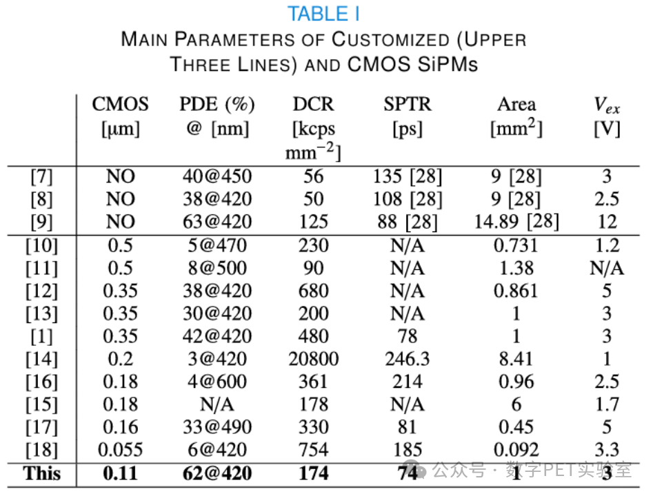

为“光子捕手”装配“魔法芯片”：新一代标准CMOS工艺硅光电倍增器来了！
什么是硅光电倍增器？
想象一台能在完全黑暗中捕捉单颗光子的“超级相机”——这个能在极弱光环境下进行光电探测的“光子捕手”，便是硅光电倍增器（Silicon Photomultiplier, 简称SiPM）。作为核医学PET/CT、粒子物理探测、激光雷达（LiDAR）、天文观测的“工业之眼”，它能捕捉微弱至极的光信号。
目前绝大多数SiPM需采用专用定制工艺制备，定制化程度高导致价格昂贵、工艺繁琐、产能受限，更难以与信号处理电路实现片上集成。
什么是CMOS工艺？
CMOS（互补金属氧化物半导体）是芯片制造的成熟技术，常被用于制造手机芯片。采用CMOS工艺造SiPM，则是性价比最高的生产路径。
（1）直接利用成熟CMOS产线，实现量产，单位成本远低于商用定制工艺，并且技术更新迭代速度更快。
（2）能够实现单光子传感器与数字读出电子器件在同一块芯片上的集成，这一技术进步将推动精密传感方法的发展，其应用领域涵盖核医学、汽车工程及消费电子等多个行业。
基于CMOS工艺的SiPM有什么挑战？
CMOS工艺本身并不是为了SiPM量身定制，直接采用标准CMOS工艺制备的SiPM不仅光子探测效率（Photon Detection Efficiency, PDE）普遍低下（< 30%）,且往往具有很高的噪声水平（~MHz）。

从图表中可以发现，0.18 μm和0.35 μm CMOS工艺节点已实现显著突破，然而，更小尺寸CMOS工艺制造的SiPM往往表现出PDE下降和DCR上升的现象。
问题来了！
为什么更小的CMOS工艺反而导致SiPM性能下降？
这归因于工艺尺寸缩减导致掺杂浓度升高，好比在越来越小的房间里捉迷藏，房间小（工艺尺寸小）虽然容易快速找到人（载流子迁移快），但墙皮剥落（STI深能级缺陷）和过度拥挤（掺杂浓度高）会产生大量干扰（暗计数）。如何在可见光谱范围内（尤其是蓝光波段）实现高光子探测效率的同时，保持与定制商用技术相媲美的暗噪声水平，是目前CMOS SiPM设计的一大难题。
针对这一挑战，PETLab教授Nicola Dascenzo带领数字PETer 博士生陈警斌、劳慧等人，基于新一代标准CMOS工艺节点，重点优化了多种SiPM结构参数的设计，深入分析了其对器件暗噪声和光子探测效率PDE的影响，解决了CMOS工艺的探测效率低、固有噪声高等难题。
最终所设计实现的SiPM器件取得了突破性性能：在3 V过偏置电压下420 nm波长处达到62%的光子探测效率（PDE），同时保持174 kcps/mm²的低暗计数率（DCR）。这一性能指标不仅显著超越了现有CMOS工艺制备的SiPM器件，更达到了商业定制技术产品的同等水平。


上述相关研究成果以“A Low-Noise High-Photon Detection Efficiency Silicon Photomultiplier in 0.11-μm CMOS”为题，发表于电子器件领域顶级期刊IEEE Transactions on Electron Devices。

目前，数字PETer正致力于将高性能SiPM所采用的0.11 μm CMOS工艺节点进一步用于开发全数字化的SiPM，为新一代集成智能电子元件的单光子传感器开辟道路。
一直以来，数字PETer都致力于实现弱光光电探测技术的自主创新。如今，团队自主研发的SiPM已经广泛应用于正电子发射断层成像设备、口腔影像等高端医疗器械，核辐射探测、高能物理等光电探测领域，覆盖华东、华南、华北、东北、华中等区域和地区的数百家用户单位，其中包括同方威视、上海通用汽车、华为技术有限公司等知名企业。

未来，在医学影像领域，自主研发的全数字SiPM可在光到电这个环节实现更精确的量化信息，这意味着PET成像不仅仅是功能活度的可视化呈现，更能提供精准、定量的生化、代谢的数据信息，为医生提供“绝对值”数据，突破医学影像的定量化挑战。
在辐射探测领域，全数字SiPM也有望替代传统光电探测器，直接搭载于卫星平台，精准捕捉宇宙射线、伽玛暴等粒子事件，实现对宙元事例分布式观测。